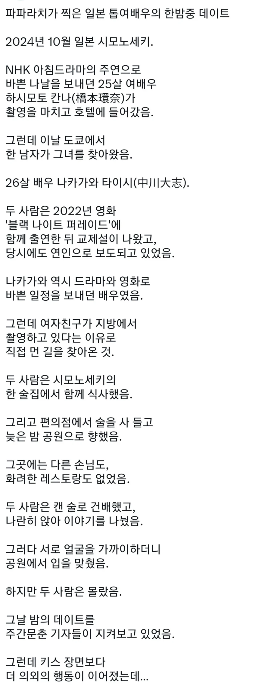
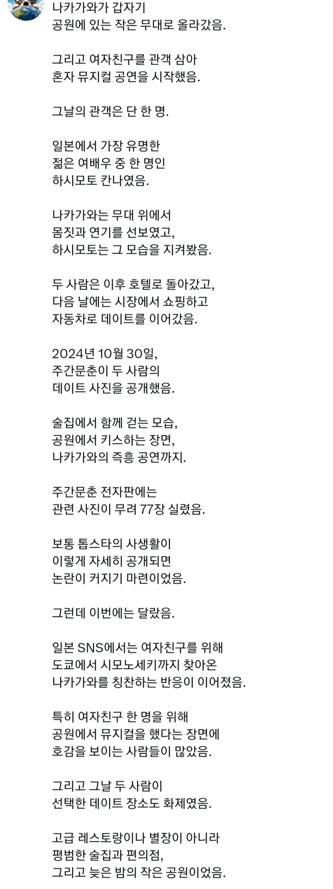
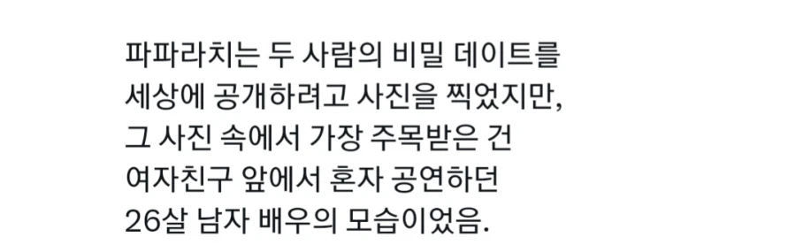
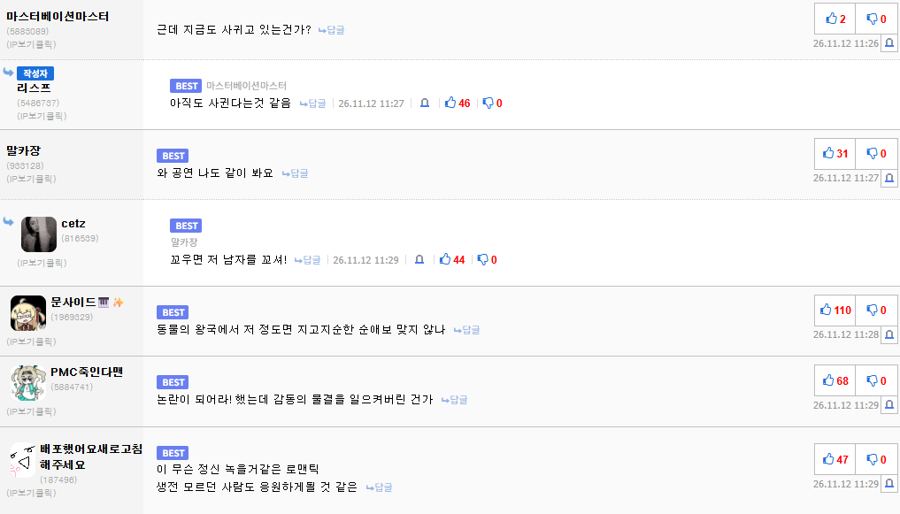

결혼 후 바람 피는 것 까지가 템플런
일본이라서 가능성 높다는게 무섭네
풋풋한 연애물ㅠㅠ
순애로구만 ㅋㅋㅋ
좋~은 단맛이 납니다 이거
그래봤자 11 ~ 12배...긴토키를 불러와라!
Av데뷔하길 그토록 바랬는데 흑흑
가내 불행한 일들만 가득하기를
이미 자신만으로도 충분히 불행한 인생일듯
눼눼 그러시겠죠
너둥

재미도 없고 감동도 없는 천박한 댓글들이 쏟아지는걸 보니 슬프구나 ㅜ
순애는 못 이긴다
비처녀잖아...
달달하네
아쥬주시해
순애의 맛... 아주 쥬시하군요
???: 이 정도 했으면 어지간히 찍었겠지??
직업을 넘어선 순애는 언제나 개추야
순애어흐~
결혼하고 잘살아라잇!
나카가와 타이시 사진도 하나 넣어주지 그랬냐
내용이랑 별개로 ai 문제 진짜 좆같네. 그런데 이번에는 달랐음 ㅇㅈㄹ
풋풋하네 사진은 어디서봄?
캬.. 달다 달아